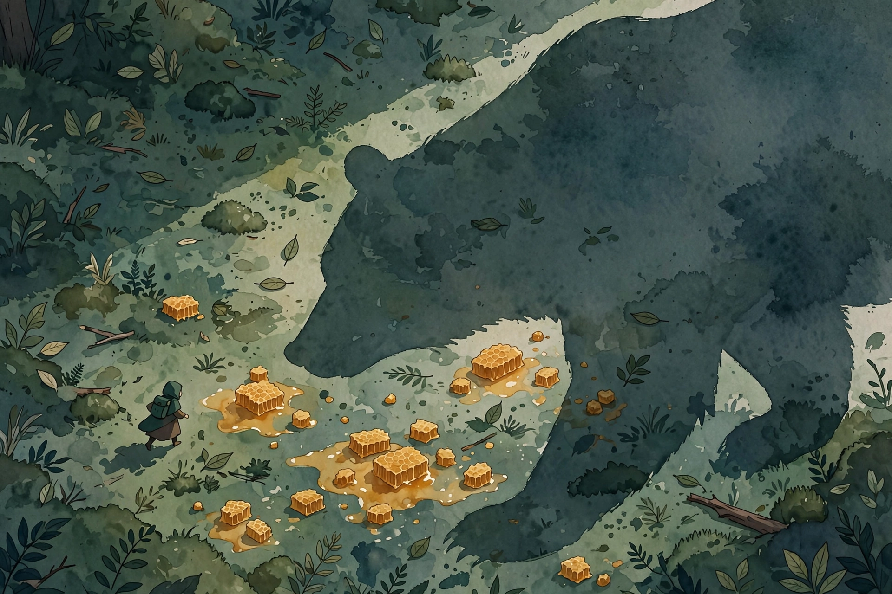

Deep Questions · Companion
Make Learning As Addictive As Social Media
Why the dopamine game is unwinnable for learning, and the stronger system: episodic future thinking.

Cal Newport. Photo: robertglazer.com (Elevate Podcast). This episode takes on a viral TED talk about addictive learning apps.
Watch. The official episode video. Use the chapter menu above to jump to any section of this companion as you listen.
The Wisdom Index: every nugget in this companion
Part 1
The TED Talk's Pitch
The episode starts with a viral TED talk by Luis von Ahn, the co-founder of Duolingo. His pitch: Duolingo wants to give everyone equal access to education, so it moved language learning onto phones with a freemium model. To make learning engaging, the app uses the same hooks as games and social media: streaks, notifications, a fun mascot. Millions use it to learn languages, von Ahn notes, more than in all US high schools combined. His hope: these addictive techniques could spread to other subjects, like math on phones.
Newport's verdict has two parts. Von Ahn's specific claim, that we can make learning as addictive as social media, is doomed. But a deeper look at how the brain motivates behavior reveals a lasting way to make learning more appealing, even more appealing than social media. It just looks nothing like the Duolingo approach.
Nugget 1 · The setup
The TED talk's pitch
What happened. Source fact Von Ahn argues that streaks, notifications, and a mascot can make learning apps as addictive as social media, and hopes the techniques spread to subjects like math.
Why it matters. Interpretation The pitch assumes addictiveness is a coating you can apply to anything. The episode argues it is a property of the activity underneath.
The principle. Interpretation Before copying a tactic, check whether it fits the material.
Part 2
Credit Where Due
Newport first gives credit. Using the internet to make information widely accessible is a genuine good. Khan Academy's easy-to-grasp visual format for mathematics did real good. And large language models like ChatGPT promise another leap: you can go back and forth with them, ask for examples, ask why a step works. Tutoring and education will change fast.
But accessibility is not addictiveness. Making knowledge available is one achievement. Making people reach for a learning app instead of TikTok is a different claim entirely, and that is where Newport gets wary.
Nugget 2 · The distinction
Credit where due
What happened. Source fact Newport praises internet-delivered education, from Khan Academy to LLM tutoring, while separating accessibility from addictiveness.
Why it matters. Interpretation Two different victories get blurred into one. Keep them separate or you will misdiagnose both.
The principle. Interpretation Available is not the same as irresistible.
Part 3
The Dopamine System
To judge von Ahn's claim, Newport explains the first of two motivational systems: the dopamine system, the one behind the urge to pull out a phone. He draws on an article by Trevor Haynes on dopamine and smartphones. Dopamine motivates behavior. It releases for food, sex, exercise, and successful social interaction, rewarding beneficial behaviors so we repeat them.
The key mechanism is immediacy. When a stimulus reliably produces a reward, the association strengthens through long-term potentiation, wiring a stimulus-response loop. Phone in hand, tap, instant emotional reaction. Then reward prediction error encoding kicks in: dopamine neurons monitor the tight feedback loop and drive you to repeat whatever the stimulus predicted. The system is Pavlovian, fast, and now.
Nugget 3 · The machinery
The dopamine system
What happened. Source fact Newport explains the dopamine system via the Haynes article: stimulus-response associations strengthen through long-term potentiation, and reward prediction error neurons drive repetition of whatever the stimulus predicted.
Why it matters. Interpretation This system does not care about your goals. It cares about what worked fifteen seconds ago.
The principle. Interpretation Anything that wins on immediacy wins the dopamine game. Plan accordingly.
Part 4
The Like-Button Accident
The dopamine hack was discovered by accident at Facebook about a decade ago. Engineers added the like button for a pragmatic reason: posts drew dozens of short congratulatory comments that buried the meaningful ones. If "great!" became a tap, comments could carry real information.
Usage exploded immediately. The accumulation of likes was a positive reward signal, and the app icon became the stimulus. Tap, reward, repeat, until the association was ironclad. That accident birthed the attention-engineering era: hack the dopamine system and you can multiply engagement fivefold, sixfold, and in TikTok's case probably tenfold. More engagement means more data and more ads to sell.
Nugget 4 · The origin
The like-button accident
What happened. Source fact Facebook engineers added the like button to declutter comments. The resulting reward loop multiplied engagement 5x to 6x, and perhaps 10x for TikTok, launching attention engineering.
Why it matters. Interpretation The most powerful manipulation system of our time started as a UI convenience. Small mechanisms compound.
The principle. Interpretation Watch for accidental reward loops in your own tools. They cut both ways.
Part 5
Learning Requires Strain
Here is why von Ahn's plan fails. A learning app must compete for the dopamine system against TikTok, Instagram, Twitter, and mobile games, all hacking the same circuitry. To win, its reward signal must be notably stronger than theirs. And it cannot be, because learning requires strain.
Complicated skills grow through deliberate practice: straining past where you are comfortable, conceptually or physically, until the higher level becomes comfortable. Newport documented this with a professional guitar player who concentrated so hard while pushing his picking speed that he forgot to breathe, then gasped savagely as his body fought off unconsciousness. That strain is what makes you better. The same holds for Spanish or calculus.
deliberate practice forces you to strain yourself
Cal Newport on how skills actually grow · Deep Questions
Nugget 5 · The wall
Learning requires strain
What happened. Source fact Newport argues that learning requires deliberate practice, straining past comfort, illustrated by the guitar player who forgot to breathe from concentration.
Why it matters. Interpretation Strain is not a flaw in learning to be engineered away. It is the mechanism.
The principle. Interpretation If it feels easy, you maintain. If it strains, you grow.
Part 6
Flow Is Not Practice
Newport addresses a common confusion. People hear strain and answer flow. He insists they are opposites. Flow, the concept studied by Mihaly Csikszentmihalyi, is self-loss in an activity: time disappears, the skier dissolves into the run. It is deeply pleasurable. Deliberate practice is never like that. You can get lost performing a song you know cold. You never get lost practicing one, because the push is so hard it turns miserable.
The confusion matters because it sells a fantasy: that learning can feel like flow the whole way. It cannot. The misery of practice is the price of the mastery that later makes flow possible.
Nugget 6 · The confusion
Flow is not practice
What happened. Source fact Newport distinguishes Csikszentmihalyi's flow state, pleasurable self-loss in an activity, from deliberate practice, which is miserable because you push past your limits.
Why it matters. Interpretation Chasing flow during practice is like chasing the finish line during training. Wrong phase, wrong feeling.
The principle. Interpretation Practice miserable, perform in flow. Do not mix up the two.
Part 7
The Broccoli Test
Newport offers two analogies for why the dopamine game is unwinnable for learning. First, broccoli in a Happy Meal. You can wrap broccoli in a fun box with confetti, but it is still bitter, and the fries still taste better. Sitting side by side, you eat the fries. Second, TikTok versus meth. A substance crossing the blood-brain barrier delivers a stronger reward than any app. The meth user likes TikTok but prefers meth. The TikTok user may like Duolingo but reaches for TikTok. In a pure stimulus-reward contest, the purer reward wins, and learning's reward is never pure. It always carries strain.
Nugget 7 · The contest
The broccoli test
What happened. Source fact Newport argues via the broccoli and meth analogies that in a pure dopamine contest, the activity with the purer reward always beats the one carrying inherent strain.
Why it matters. Interpretation Do not enter contests you are structurally guaranteed to lose. Change the contest.
The principle. Interpretation If the game is pure reward, the fries win. Play a different game.
Part 8
Episodic Future Thinking
The different game is the brain's second motivational system: episodic future thinking, or EFT. Newport draws on an article by Jane McGonigal summarizing the neuroscience. EFT is mental time travel: the brain projects you into a vividly imagined future, then motivates present action to reach it. It differs from daydreaming about solved problems. It connects who you are today with what you might feel and do tomorrow.
The neuroscience numbers stand out. fMRI studies show EFT activates 11 distinct brain regions, versus 6 for merely remembering the past. The hippocampus, the seat of memory and learning, digs up relevant details and recombines them into the imagined scene. The ventromedial prefrontal cortex, the vmPFC, tracks goals and progress. And the motivations that surface first tend to link to your deepest values: learning, helping others, bravery, family, creativity.
Newport's caveman example: honey on the ground, and a bear nearby. Dopamine screams to eat the honey. EFT overrides it, because bears tend to eat you. That override is what lets humans rise above base instinct, invent the axe and the wheel, and pursue creative leaps. EFT is the more powerful system, and it can beat dopamine.
your EFT system can kick your dopamine system's butt
Cal Newport on the stronger motivational system · Deep Questions
Two motivational systems
Source: Deep Questions, Make Learning As Addictive As Social Media, the two motivational systems. Labels are paraphrase.

Illustration. Honey and the bear: EFT overriding dopamine. AI-generated watercolor made for this page.
Nugget 8 · The stronger system
Episodic future thinking
What happened. Source fact Newport presents EFT from McGonigal's summary: mental time travel across 11 brain regions, hippocampus plus vmPFC, surfacing motivations tied to deep values, capable of overriding dopamine, as in the honey-and-bear example.
Why it matters. Interpretation This is the human advantage over the house cat: a future vivid enough to beat a reward right now.
The principle. Interpretation Make the future vivid, and the present urge loses its grip.
Part 9
The Playbook
How do you weaponize EFT for learning? Two moves. First, flood the hippocampus with resonant examples: people who converted a love of learning into a life that resonates with you. Documentaries, profiles, biographies, talks, real meetings. Surround yourself with proof of the life you want.
Second, clarify your values. Name what is at stake: engaging ideas above base rancor, pushing your mind to its fullest potential for impact, a near-religious drive to understand, supporting your family through your mind. Pair vivid examples with clear values, and the EFT system fires: the projected future feels better than the TikTok hit, so you read instead, and you accept the strain of stretching your mind, owl mascot or not.
This is the same machinery as the deep life's lifestyle-centric planning: start with a clear vision of the life you want, work backwards to build it. The playbook generalizes beyond learning to anything that turns a shallow life deep.
Nugget 9 · The method
The playbook
What happened. Source fact Newport prescribes resonant examples of learned lives plus clarified values, the same machinery as lifestyle-centric planning: vision first, work backwards.
Why it matters. Interpretation Motivation is not found. It is constructed, from examples and values, on purpose.
The principle. Interpretation Collect heroes. Name values. Let the future pull you.
Part 10
Dylan's Study Machine
The episode's case study is Dylan, a student studying by guilt: grinding through YouTube videos until the shame lifts. Newport's diagnosis is blunt: Dylan is bad at learning, in the fixable sense. The prescription is a system. Study like Darwin: evolve the method by natural selection, keeping what works.
The method: five flashcards per topic, then one out-loud lecture per topic in your own words, check it off, move to the next. Seven topics an hour. Newport knows it works because he lived it. He arrived at Dartmouth an average student from public school, then got serious about studying how he studied. Result: a 4.0 GPA every quarter of sophomore, junior, and senior year, except one A-minus in senior spring left him at 3.96, an A away from valedictorian. He did not get smarter. He got better at studying. Total study time plummeted. No all-nighters, never past 8 p.m. He got bored during exam periods while everyone else lived in the library.
Dylan's study loop
Source: Deep Questions, Make Learning As Addictive As Social Media, the Dylan case study and Newport's Dartmouth record. Labels are paraphrase.
Nugget 10 · The case study
Dylan's study machine
What happened. Source fact Newport prescribes flashcards plus out-loud lectures, seven topics an hour, evolved by trial. His own version produced a 4.0 every quarter at Dartmouth with no all-nighters and never studying past 8 p.m.
Why it matters. Interpretation Studying is a skill with a technique, not a virtue with a duration. Guilt is not a method.
The principle. Interpretation Test the method, keep what works, and let the hours shrink.
Part 11
Model the Life
A parent asks how to put a sixth grader on the path to deep work: which schools? Newport's answer: care less about the school than about what you model. Choose the school on normal common sense, convenience, friends, good programs. The advanced stuff, raising a deep thinker, comes from modeling. Kids must see that you prioritize a life of the mind: engaged with books and ideas, not on your phone all the time.
Two concrete moves. First, no unrestricted smartphone for the 12-year-old. Newport is blunt: when the kid says all my friends have one, the answer is that the parents listen to Cal Newport. Unrestricted access short-circuits everything. Second, fill the house with the life of the mind: books everywhere, talk about the great thinkers you admire. His own father admired mathematicians and theoretical physicists. The house heard constantly about Richard Feynman and John von Neumann. That is how Newport, recruited for systems work, tricked his way into MIT's theory group and made himself a theoretician.
you don't get a smartphone
Cal Newport's script for parents of 12-year-olds · Deep Questions
Illustration. The modeled life: a house full of books. AI-generated watercolor made for this page.
Nugget 11 · The parenting
Model the life
What happened. Source fact Newport tells parents to model a life of the mind, deny the 12-year-old a smartphone, and fill the house with books and admired thinkers, citing his father's Feynman and von Neumann stories and his own path into MIT's theory group.
Why it matters. Interpretation You cannot engineer a deep thinker with tutoring. You can only surround one and get out of the way.
The principle. Interpretation Be the example. Remove the short circuit. The rest is up to them.
The episode in seven lines
- The dopamine game is unwinnable for learning: strain always loses to pure reward.
- Deliberate practice is strain past comfort. Flow is the opposite of practice.
- The stronger system is episodic future thinking: vivid futures beat present urges.
- Build EFT with resonant examples of learned lives and clarified values.
- Study like Darwin: evolve the method. Flashcards, lectures aloud, seven topics an hour.
- Model the life of the mind. The phone stays out of the 12-year-old's hands.
- Do not make learning addictive. Make the future more vivid than the distraction.
Distilled from Deep Questions, Make Learning As Addictive As Social Media with Cal Newport. Video: youtube.com/watch?v=XOPBN1kj5Xc.